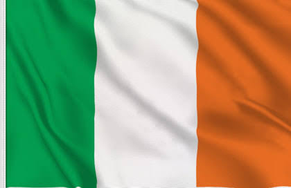

La República de Irlanda ocupa la mayor parte de la isla de Irlanda, frente a las costas de Inglaterra y Gales. Su capital, Dublín, es el lugar de nacimiento de escritores famosos como Oscar Wilde y también es hogar de la cerveza Guinness. El Libro de Kells (siglo IX) y otros manuscritos ilustrados se exhiben en la biblioteca del Trinity College de Dublín. El país recibe el apodo de "Isla Esmeralda" por su exuberante paisaje verde y cuenta con sitios como el Castillo de Cahir, construido en la Edad Media.

CARACTERISTICAS
Capital: Dublín, una ciudad vibrante y culturalmente rica.
Idioma: Irlandés (Gaélico) y inglés, siendo el inglés el más utilizado en la vida diaria.
Moneda: Euro (€), ya que Irlanda es parte de la zona euro.
Paisajes: Conocida por su campiña verde, acantilados impresionantes y lagos.
Cultura: Rica en música tradicional, danza irlandesa y leyendas celtas.
Economía: Destacada en tecnología, farmacéutica y finanzas, con muchas empresas globales establecidas.
Gobierno: República parlamentaria, con un presidente como jefe de estado y un primer ministro (Taoiseach) como jefe de gobierno.
Religión: Predomina el catolicismo, aunque hay un aumento de la secularización en los últimos años.
Educación: Sistema educativo de alta calidad, con universidades reconocidas como la Trinity College.
Turismo: Atrae turistas por sus paisajes naturales, su historia medieval y monumentos icónicos como el Castillo de Dublín y los Acantilados de Moher.